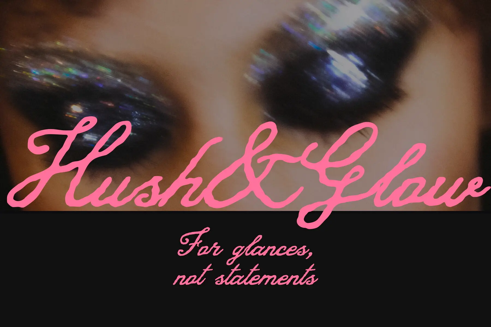

The source artwork is preserved beside the editable remake. The text plate uses the cleaned background and keeps the source crop and hierarchy.
Editable lettering fitted over the source composition with a measured safe area.

The source artwork is preserved beside the editable remake. The text plate uses the cleaned background and keeps the source crop and hierarchy.